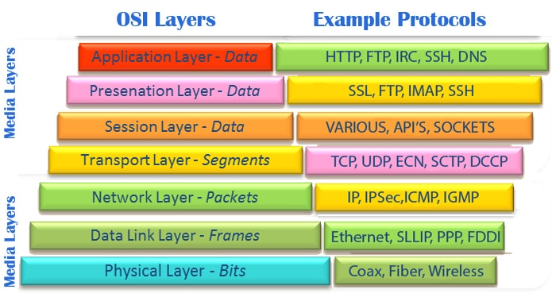
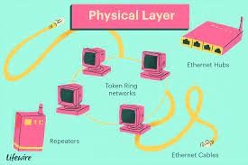
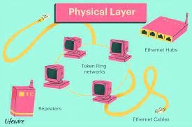
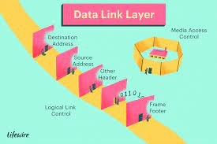
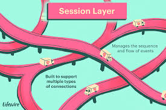
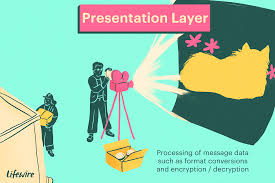

7 layers explained in detail

Layer 1:

The OSI models specifies how information is transmitted from a network device like a router to its destination through a physical medium and how it interacts with the application. In other words, it provides a standard for different systems to communicate with each other.
Layer 1:
Physical Layer:
- At the lowest layer of the OSI reference model, the physical layer is responsible
for transmitting unstructured data bits across the network between the physical layers
of the sending and receiving devices. In other words,
it takes care of the transmission of raw bit streams.
- The physical layer may include physical resources like cables, modems, network
adapters, and hubs, etc.

Layer 2:
Data Link
Layer
- The data link layer corrects any errors that may have occurred at the physical layer.
It ensures that any data transfer is error-free between nodes over the physical layer.
It is responsible for reliable transmission of data frames between connected nodes.
The data is packaged into frames here and transferred node-to-node. The data layer has the
following sub-layers
- Media Access Control (MAC): The MAC address layer is responsible for flow
control and multiplexing devices transmissions over the network.
- link control (LLC): The LLC layer provides error control and flow control
over the physical medium and identifies line protocols.

Layer 3:
Network
Layer
- The network layer receives frames from the data link layer and delivers them to the
intended destination based on the addresses inside the frame. It also handles packet routing. The network
layer locates destinations using logical addresses like the IP. Routers are a crucial component at this layer as
they route information to where it needs to go between different networks.
The main functions of the Network layer are:
- Routing:strong The network layer protocols determine which routes from
source to destination.
- Logical Addressing:The network layer defines an addressing scheme to uniquely identify devices.
The network layer places the IP addresses from the sender and receiver in the header.
Layer 4:
Transport
Layer
- The transport layer is responsible for delivering, error checking, flow control, and
sequencing data packets.
It regulates the sequencing, size, and transfer of data between systems and hosts. It gets
the data from the session
layer and breaks it into transportable segments.
- Two examples of the Transport Layer are UDP (User Datagram Protocol) and
(Transmission Control Protocol)
that is build on top of the Internet Protocol (IP model), which work at layer 3.
Layer 5:
Session
Layer
- The session layer will create communication channels, called sessions,
between different devices. This layer is responsible for opening those sessions and
ensuring that they’re functional during data transfer.
- In other words, the session layer is responsible for establishing, managing, and
terminating communication sessions with the lower layers with the presentation and application
layer.
It is also responsible for authentication and reconnections, and it can set checkpoints
during a data transfer—if.

Layer 6:
Presentation Layer
- The presentation layer is responsible for ensuring that the data is understandable
for the end system
or useful for later stages. It translates or formats data based on the application’s syntax
or semantics.
It also manages any encryption or decryption required by the application layer. It is also
called the syntax layer.

Layer 7:
Application Layer
- The application layer is where the user directly interacts with a software application,
so it is closest to the end user. When the user wants to transmit files
or pictures, this layer interacts with the application communicating with the network. The
application layer identifies resources, communication partners, and synchronizes communication.
- Other functions of the application layer are the Network Virtual Terminal and FTAM-File
transfer access, and mail/directory services. The protocol used depends on the information the user wants
to send.
Some common protocols include:
- POP3 or SMTP for emails
- FTP for emails
- Telnet for controlling remote devices
- Examples of communications that use Layer 7 are web browsers (Chrome, Firefox,
Safari).
Pros and cons of the OSI model
- The OSI model has a number of advantages, including the following:
- It's considered a standard model in computer networking.
- The model supports connectionless, as well as connection-oriented, services.
Users can take advantage of connectionless services when they need faster data
transmissions over the internet and the connection-oriented model when they're looking for
reliability.
- It has the flexibility to adapt to many protocols.
- The model is more adaptable and secure than having all services bundled in one
layer.
- The disadvantages of the OSI model include the following:
- It doesn't define any particular protocol.
- The session layer, which is used for session management, and the presentation layer,
which deals with user interaction, aren't as useful as other layers in the OSI model.
- Some services are duplicated at various layers, such as the transport and data-link
layers.
- Layers can't work in parallel; each layer must wait to receive data from the previous
layer.